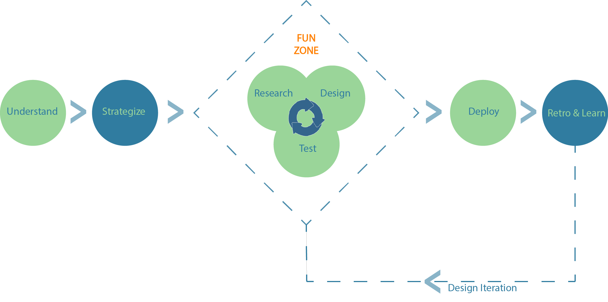
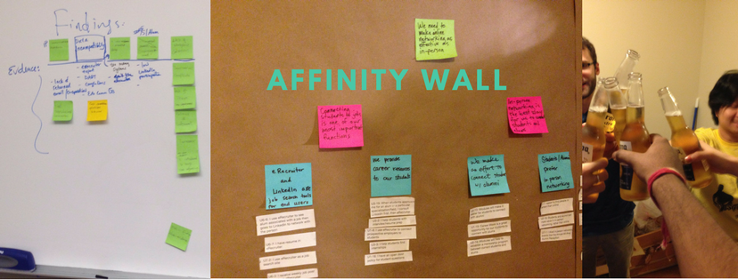
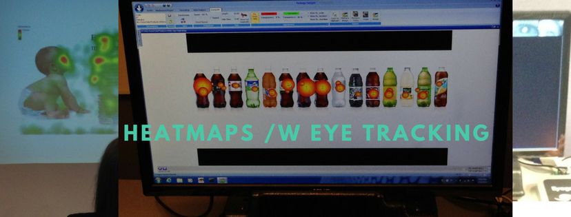
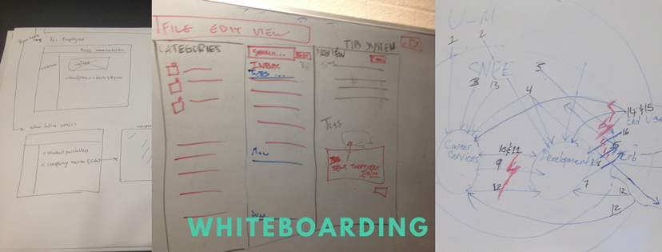
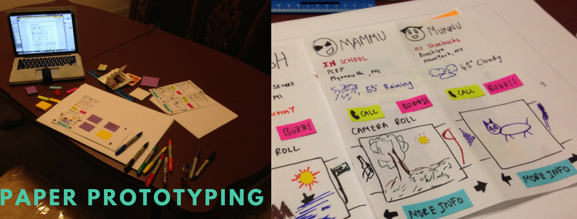
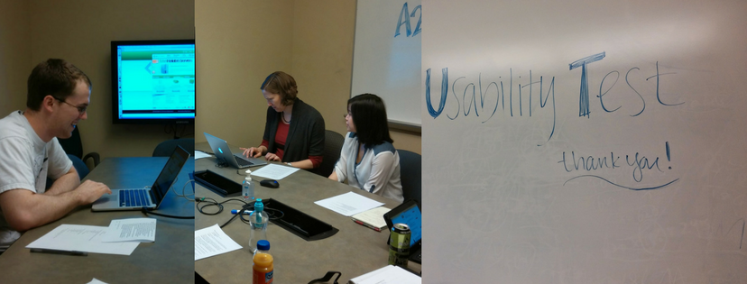

My UX Process

Step 1: Understanding the lay of the land.
As a Computer Science major, I have been trained to be a problem solver and the first step to solving a problem is to understand it to the best of our ability. To do this, I immerse myself with the product, if an existing version of the product does not exist, I sit with the stakeholders and ask them to describe what their opinion of the output is like. During this process, I try to focus on what the product does than what it is.
For example, if we are creating the first mobile app for the dining services of a University, I will go to the dining hall and try to experience their process first hand. I will try to find out what the menu of the day is before I go there and look for surprises. I will also look at other food related apps active in the area, like Eat Street and Yelp. This experience will tell me what value the new app can add to my experience and where.
Step 2: Strategizing
This is usually the first step of a traditional UX process. Strategizing is pretty self explanatory, this step is a setup for the whole project to be created upon. Common UX methodologies I use during strategizing are,
Heuristics Analysis: I use the widely regarded Nielsen's Heuristics and Gomez et al. Mobile Heuristics to understand the current state of usability of the product.
Competitor Analysis: Competitor analysis sounds pretty straightforward, but it is gets tricky sometimes; especially when dealing with new markets like Virtual Reality. I follow a thumb rule of 5 primary competitors and 2 secondary competitors. Sometimes, I flex my python muscles to scrape websites and look at their social media presence, white-papers released by their companies, media interviews and other public records.
A sample competitor analysis and report from my previous projects
Reviewing available information with stake holders: Setting up expectations with the stakeholders is very important in the early stages of the project. The best way to do it in my experience is to look at the available information with the stakeholders and have them be a part of creating the research question.
Developing a binding research question: This is the most crucial step during the strategy process, the research question is the binding and non-changing element which will be used countless times during the rest of the process whenever in doubt. This is an all-hands on deck process and should include stakeholders.
Create a research plan: In my experience planning proved to be very important, it not only sets deadlines on topics at hand but also acts as a reality check for people like me, who often get lost in the ethnography rabbit hole.
Step 3: Research and Analysis
Researching is one of the most fun and stressful time of a project. This when the platform problems, usability issues and the realities of the markets take the tangible shape of analytical data or anecdotal evidence. Some of the methodologies I employ during this phase are,
Contextual Inquiry and Ethnography: This is one of my favorite techniques to use, observing the user in their natural habitat and asking probing open ended questions. These interviews often reveal several nuanced problems and puts them in context. This will prove to be the most valuable information during the analysis phase.
Surveys: Surveys are a great way to quantify user feedback and helps in analysis phase a lot.
User Interviews: Formal user interviews, especially after ethnography sessions and surveys will give a chance to ask better questions. I tend to keep my user interviews to less than 30 minutes and in a non-work environment.
User Testing: At this point in the process, usually there are some prototypes being floated around which need to be tested, if not it would be a good idea to test the existing versions of the product for comparison at a later point of time. I like to conduct task based tests with pre and post surveys.
Focus Groups: Focus groups are a great way to gather "group think". From my experience in moderating a few focus groups, it is important to have a dedicated note taker along with an audio recording as a backup. Focus Groups are a great way to test the trends obtained from the existing data.
Card Sorting: Card sorting is Research/Analysis technique used to organize information or create a navigation system for any information system. I have used this technique in the past to create and evaluate menus and nested menus.
User Journey Map: Depending on the project, a journey map often reveals the existing or anticipated pain points with a user's experience of the product and enables us to tackle them immediately.
Personas: Personas are a great way to visualize the target users. I create and iterate on the personas throughout the research and analysis process, so that they will be ready and comprehensive when we get to the design phase.
Other Techniques: User Flow diagrams, Site or Application Mapping, Heatmapping with eye tracking are some of the project specific methods that can be valuable.

Step 4: Design and Test
In the modern day SDLC, design stage is the most collaborative time of the project there is and rightly so. This is a time for every idea about everything from everyone to be on the table. To achieve this I employ,
Sketching / White-boarding: A very common method to kickstart the design process. These sessions can be individual or part of a design sprint or group activity. I try to solve problems individually the best I can and then try to combine them. This takes a lot of iterations, back & forth and a lot of coffee.
Brainstorming: One of the most intriguing thing about humans is that we are full of ideas together. From my experience of participating and conducting brainstorming sessions, I have found that there is no right idea but there will be a few ideas which lead to a conversation that will solve most of the problems.
Paper prototype: Paper prototypes are quick, cheap to make and platform independent (until IE releases a patch that breaks everything). I like to use the paper prototypes to convey my ideas in a more tangible form that everyone can understand.

Design Sprint: Design sprints are a great way to solve a lot of problems very quickly. The best design sprints I have been to have time limits and very clear objectives. A major part of design sprints that is often ignored is discussing the results with the participants. This can be very useful, especially if they will be around for another sprint.
Wire-framing and Prototyping: I use Balsamiq mockups, Illustrator, Adobe XD and good ol' CSS to create my lo-fi prototypes. With these wireframes, I want to the user to be able to visualize a final product. So, even though they don't look like it, these wireframes should be able to convey what I want them to see.
User Testing: My user testing strategy is very straightforward. I have a pre and post survey along with clear tasks or objectives as required by the product being tested. I like doing moderated user testing in person and recording their inputs and facial expressions. I also ask my users to think out loud while they are completing the tasks. I time the results going through the video. I try my best to make it a point that the testing is being done to the product and not to the user and that failure of the tasks is a failure of the design and not the user.

Step 5: Deploy
High-Fidelity Prototype: These prototypes should represent the final product including any animations or micro-interactions in the design. They will be used when setting up the requirements to the developers and also in user testing.
User Testing: These are largely the same as the ones I have detailed above.
Design Document: Usually a webpage in the internal network that details the
- Typography
- Colors
- Elements
- Components
- Specifics of the UI Elements and their combinations.
- Versioning
My Favorite design document example.
Developer Meetings: It is important for the developers or the key leaders in the dev team to understand the reasons behind the decisions that went into the design. This is a good way to for them to understand that the primary reason for the redesign is not to make their life harder but a long evidence driven process.
Step 6: Retrospective and Iteration:
Digging the data: Analytics and numbers will usually give a pretty factual answer to whether or not a design is successful. I have previously relied upon these numbers to rally support towards spending more resources to implement a user centered design approach to other areas of the products.
User Testing & A/B Testing: User Testing should be done on the production design to find any discrepancies between the spec and the product. Testing at this stage also reveals insights that can be taken into a retro session.
Retro: Although usually an agile thing, retro can be incredibly helpful especially when it is possible to include all the teams who participated in the project. This is a time when we can learn what every team thought of the project and design implementation process.
Rinse and Repeat: Gather the feedback and go to step 3 again to begin work on the next version of the product.


{kind=link}